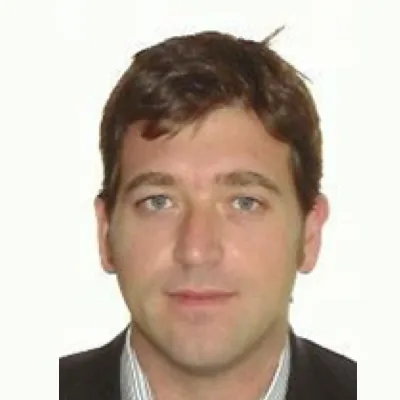

About us
Independent advisory for transport and energy infrastructure.
Infrastructure in Motion is an advisory firm with offices in Spain, Colombia, Chile and the United States. We work on toll roads, managed lanes, airports, parkings, solar PV, BESS, turbines and PPPs of every kind, for concessionaires and sponsors, funds and lenders, and public authorities.
“We bring the rigour of the large advisory firms with the agility, senior attention and accountability of a boutique.”
What we do
Across the life of the asset, from the first demand study to hand-back.
-
01Studies
Revenue forecasts
We build revenue forecasts to investment-grade standard and keep them current through annual updates. The work covers demand analysis and tariff reviews, with the assumptions documented so that lenders and investors can review and rely on them.
-
02Bid
Sponsor support
We support sponsors preparing a bid with the revenue case, the analysis of demand risk and the structuring of the consortium. We work alongside the bid team, so the revenue case stays consistent with the financial model and the technical workstreams.
-
03Transaction
Due diligence
We review the base case independently on behalf of lenders and investors, covering revenue forecasts, opex and capex. The review tests the main assumptions and identifies the risks that matter for the financing or the acquisition.
-
04Operation
Asset performance
After financial close, we help owners and operators plan and track the performance of the asset. This includes operating and maintenance budgets, lifecycle capex plans and results against the original model. We also support tariff reviews and the hand-back of the asset at the end of the concession or contract.
How we work
A multidisciplinary team
Our team combines technical, commercial and financial expertise with many years of experience in transport and energy infrastructure. Our senior members have worked on the sponsor and investor side as well as the advisory side, which gives us a complete and useful perspective for each project.
A senior director on every deliverable
Analysts and engineers carry out the analysis, which allows the work to be properly resourced at a sensible cost. A senior director stays on the mandate from start to finish: agrees the approach at the outset, follows the work as it progresses, and reviews every deliverable before it is issued. Where a mandate needs specific input, such as environmental, social or local technical expertise, we bring in the required specialists to collaborate under the guidance of our senior director.
Working alongside our clients
We work with the client team throughout the mandate, agreeing scope, assumptions and timetable at the start and reviewing progress together along the way. Our analysis supports specific decisions, such as a bid, a financing or an investment, so we stay involved in how the results are used and adapt to the deadlines, objectives and structure the client works to.
The team
Our partners bring decades of experience from the largest capital investors, developers and operators of infrastructure worldwide.
Where we come from
-
Cintra
Toll road concessions
Global toll road operator, with leading positions in North America and Europe.
-
Macquarie
Infrastructure capital
Global infrastructure investor, with one of the largest private capital platforms.
Our people
-

Borja
Founder & CEO
Infrastructure sector specialist with sound academic background and large experience in developing projects with more than 20 years in infrastructure and energy investments and PPP/P3 procurements in highways, rail, airports, mining facilities, renewables, and social including hospitals.
Borja founded Infrastructure in Motion in 2023 focused on advising funds, investment banks, lenders and investors in the infrastructure and energy sector. IIM is advising Macquarie among other funds along several investments in USA and LATAM and assisting EU investors and EPC contractors to attain opportunities in Latam, Europe and Africa. Borja has a large and relevant experience in conducting Traffic and Revenue studies and Technical DD. Infrastructure in Motion has recently partnered with FES, one of the largest developers of renewables in UK, to develop DES, BEES and hydrogen opportunities in Europe and Australia. Infrastructure in Motion is as well participating in Fiber Optical and Data Room projects in Chile in conjunction with the main local operators.
Borja previously worked for Macquarie Capital as Vice President since 2019 in LATAM and North America. In Macquarie Borja led technical and Traffic and Revenues department and supported business development to originate and deliver new projects and opportunities.
Before joining Macquarie, Borja led the Traffic and Revenue department in Cintra-Ferrovial (US and Europe) for 8 years working on traffic demand risk projects including Managed Lanes with dynamic pricing (NTE, LBJ, I66, I77 and 407 in Canada). In addition, more than 10 years of successful experience in advising and delivering high quality projects for equity investors and public sector clients for many transportation assets in North America, Europe, Australia and Africa.
His experience covers large transport projects, commercial and business development, contract negotiations (CA, EPC contracts, EPC procurements) leadership of numerous traffic and revenue forecasting studies for Toll Roads, Managed Lanes, Airports, Rail, Metro, hospitals, LRT and BRT projects and renewables, smart cities and digital integration. These have been undertaken for the private sector, financial institutions, and public stakeholders.
Borja holds a PhD in Civil Engineering (Transportation) and an MS in Civil Engineering from University of Roma TRE, and a BSc in Engineering from Institut National des Sciences Appliquées – National Institute of Applied Sciences.
-
Rafael
Technical Project Manager
Dynamic infrastructure and energy professional specializing in economic analysis, innovation, and project management, with a multidisciplinary engineering background and hands-on experience across Europe, the US, and Latin America.
At IIM, Rafael leads financial analysis of the project portfolio, assesses viability, and prepares investor materials, and contributes to EPC contract design and development.
He previously worked as Project Consultant and Chief Engineer at InEnergy SpA (Santiago, Chile), as Project Engineer at the San Antonio Port Authority (Chile) on a transport green hydrogen transition study, and as an R&D Engineer at the Marine Offshore Renewable Energy Lab in Turin, Italy.
Rafael holds an MSc in Renewable Energy Systems from Politecnico di Torino and an Industrial/Mechanical Engineering degree from Pontificia Universidad Católica de Chile. He has working proficiency in Spanish, English, French and Italian.
-
Cristian
Data & Analytics Manager
Telecommunications and systems engineer with strong expertise in data processing and modelling, GNSS systems, programming, and data integration, with international experience across Europe and Latin America.
At IIM, Cristian leads the engineering effort behind congestion mapping, origin-destination (OD) analysis, and automation of T&R modelling processes, enhancing the accuracy and efficiency of traffic and mobility studies across IIM’s portfolio.
He has strong experience in geospatial processing of traffic datasets (GPKG/Shapefile), station-to-segment mapping and corridor visualization. He previously worked in Italy as a System Test & Integration Engineer and as a Full Stack Developer on a geospatial platform, developing GNSS-based navigational algorithms.
Cristian holds an MSc in Communications and Computer Networks from Politecnico di Torino and an Electrical Engineering degree from Pontificia Universidad Católica de Chile. He has working proficiency in Spanish, English and Italian.
Tell us about the asset.
Send the term sheet, the tender notice, or the question you cannot get a straight answer to. One of our partners will reply and show you how we can help.